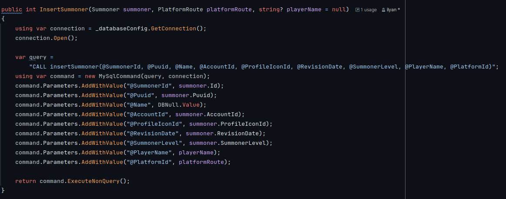
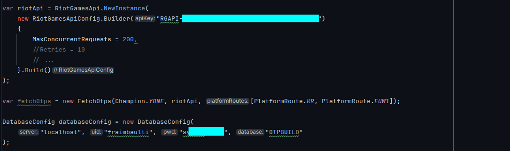

Qu'est-ce que OTPBuild ?
OTPBuild est une application qui permet aux joueurs du jeu League of Legends de récupérer des informations sur les meilleurs joueurs pour s'en inspirer. Le projet est composé de trois parties principales :
- Backend (C#) - Une API qui utilise l'API de Riot Games pour récupérer les données des joueurs et les stocker dans une base de données MySQL
- API (C#) - Une interface de programmation qui expose les données stockées
- Frontend (TypeScript & Vue.js) - Une interface utilisateur web permettant aux joueurs de consulter facilement les statistiques
Interface utilisateur
L'interface web d'OTPBuild permet aux utilisateurs de rechercher facilement les meilleurs joueurs et d'accéder à leurs statistiques détaillées pour s'inspirer de leurs stratégies.

La barre de recherche d'OTPBuild permet de filtrer les joueurs par nom pour trouver rapidement les experts de chaque champion
API REST
L'API d'OTPBuild est documentée avec Swagger, ce qui permet aux développeurs d'explorer facilement les endpoints disponibles et de comprendre comment interagir avec le système.

Interface Swagger de l'API OTPBuild montrant les différents endpoints et méthodes disponibles
Technologies utilisées
- C# - Langage principal pour le backend et l'API
- MySQL - Base de données relationnelle pour le stockage des données
- TypeScript - Langage typé pour le développement frontend
- Vue.js - Framework JavaScript pour l'interface utilisateur
- API REST - Architecture pour la communication entre les services
- Swagger - Documentation interactive de l'API
Voir le code source
-
otpbuild
Backend C# pour la récupération des données et leur insertion dans la base de données
Voir sur GitHub -
otpbuildapi
API C# permettant d'accéder aux données
Voir sur GitHub -
otpbuildweb
Frontend TypeScript et Vue.js qui affiche les données aux utilisateurs
Voir sur GitHub
Les apprentissages critiques
AC23.01 | Concevoir et développer des applications communicantes
Niveau de maîtrise : acquisJ'ai développé une application qui communique avec l'API de Riot Games pour récupérer les données des joueurs. J'ai appris à utiliser les requêtes HTTP pour envoyer des demandes à l'API, et à traiter les réponses pour extraire les données des joueurs.

AC23.02 | Utiliser des serveurs et des services réseaux virtualisés
Niveau de maîtrise : acquisJ'ai utilisé un serveur MySQL pour stocker les données des joueurs. J'ai appris à créer des tables pour stocker les données, et à écrire des requêtes SQL pour insérer, mettre à jour, et récupérer les données.
AC23.03 | Sécuriser les services et données d'un système
Niveau de maîtrise : acquisJ'ai sécurisé l'application en utilisant des clés d'API pour accéder à l'API de Riot Games. J'ai également sécurisé la base de données en utilisant des mots de passe forts et en limitant les accès aux utilisateurs autorisés.
